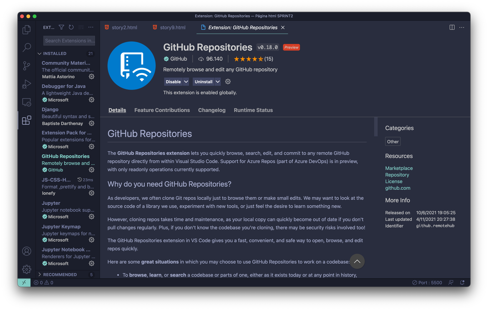
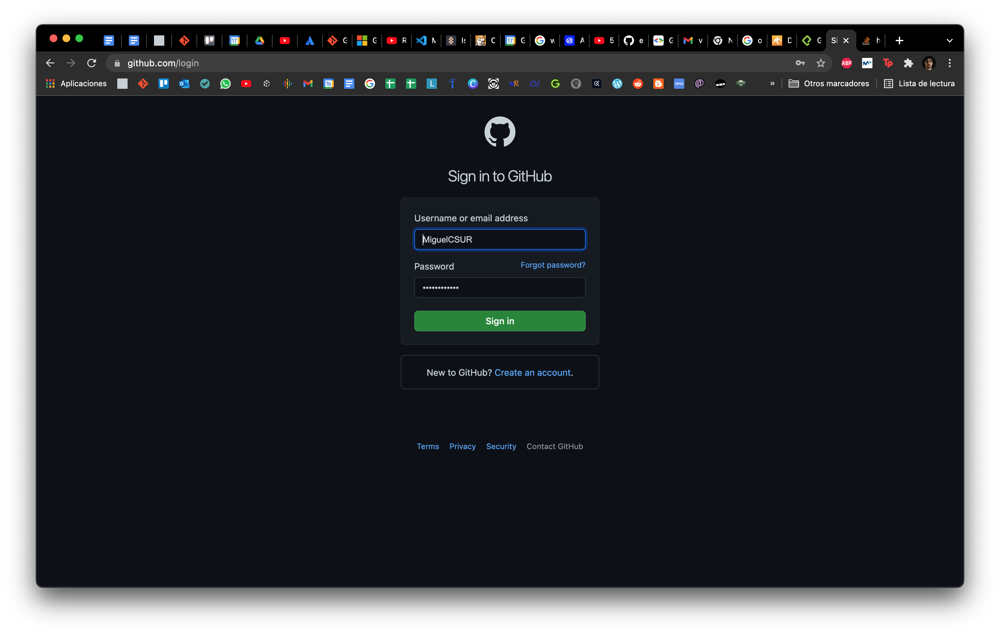
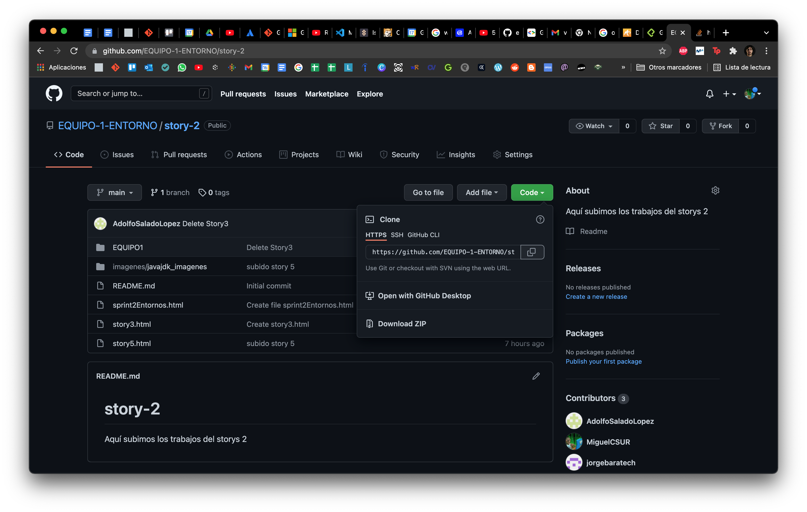
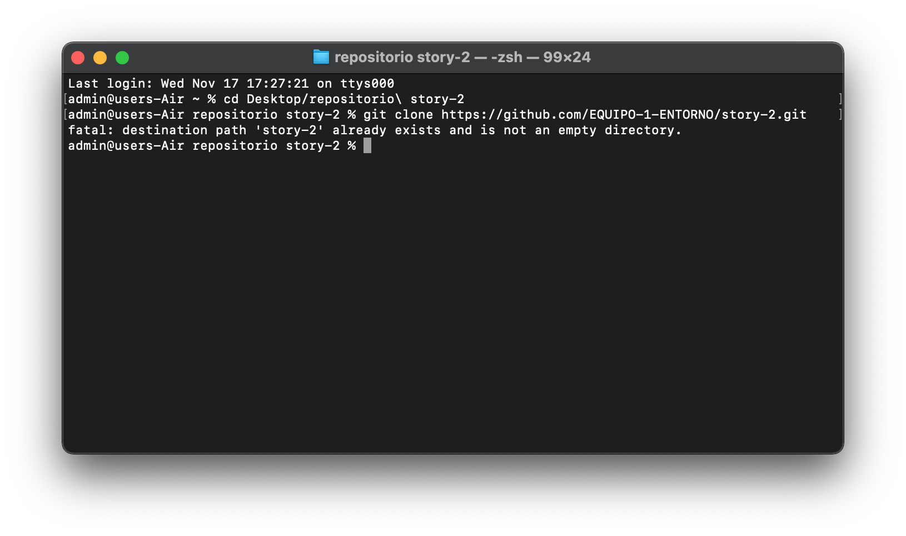
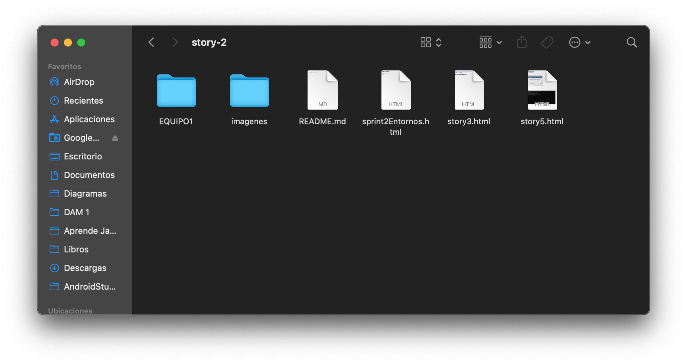
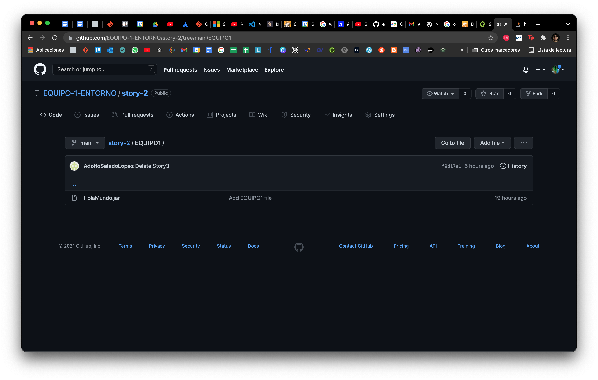

Desde visual studio code. Pulsamos en el icono de extensión en la barra lateral izquierda, abajo del todo, y en el buscador ponemos GitHub Repositories, seleccionamos y clicamos en instalar. Ya lo tenemos instalado.
Te diriges a la página git, clicas en Sign in, introduces usuario, contraseña y entrar.
En la carpeta que quieras descarga click derecho bash Git, y en la consola escribes:
$git clone https://github.com/nombre-del-repositorio.git
Ya tienes bajado el repositorio en tu equipo localmente
  Carpeta llamada equipo1 y añade el HOLAMUNDO, luego te situas en el repositorio desde github, clicas en Add file, y luego Upload files en el desplegable.
